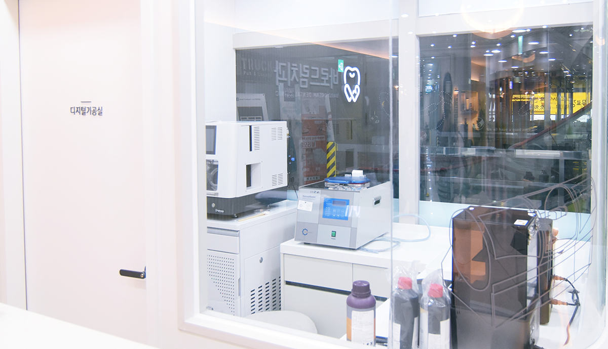

作
환자였던 의사가 만든, 하나의 작품 같은 치과
Quick Guide
골라주시면 알맞은 페이지로 바로 안내해 드립니다
환자였던 의사가 만든, 하나의 작품 같은 치과
Our Concern
많은 분들이 같은 걱정을 하십니다.
System
SYSTEM 01
약물로 진정 상태를 유지해, 기억 부담을 줄여드리는 방식입니다.
SYSTEM 02
컴퓨터로 먼저 시뮬레이션하고 식립합니다.
SYSTEM 03
조건이 맞으면, 발치 당일 새 치아로 돌아가십니다.
SYSTEM 04
원내 디지털 기공소에서 직접 제작·조정합니다.
Treatment

필요한 보철물은 원내 디지털 기공소에서 직접 제작·조정합니다. 원장의 손끝과 기공사의 손끝이 한 공간에서 맞춰지는 만큼, 조정도 더 빠르고 정확합니다.
원내 디지털 기공소 보기경기 안산시 단원구 고잔로 108 대동조이월드 405호
지하철 4호선 · 수인분당선 안산중앙역 하차 도보 5분
연락처를 남겨 주시면 확인 후 편하게 연락드립니다.